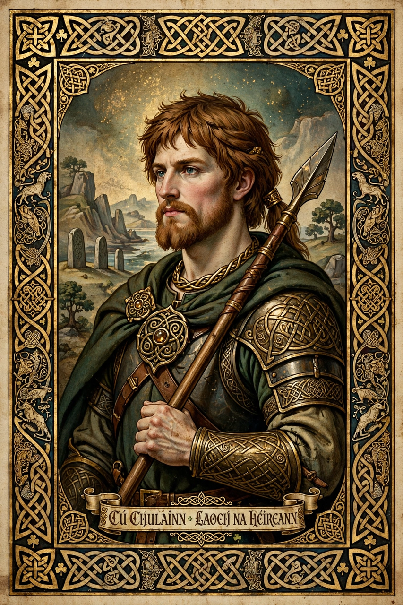

Celtic Revival
The Celtic Revival (also called the Celtic Twilight in its Irish literary phase) was a movement in literature, art, scholarship, and cultural nationalism in Ireland, Scotland, Wales, and Brittany from the late 18th century through the early 20th century. It sought to recover and celebrate the languages, mythology, and artistic heritage of the Celtic peoples, and it became closely bound up with the politics of Irish independence and Scottish and Welsh cultural identity.

| Period | c. 1760s – early 20th century |
|---|---|
| Regions | Ireland, Scotland, Wales, Brittany |
| Key figures | James Macpherson, Charlotte Guest, W. B. Yeats, Lady Gregory |
| Fields | Literature, art, language revival, archaeology |
Origins: Ossian and the antiquarians
The movement's spark was James Macpherson's Ossian poems (1760–63), presented as translations of ancient Scottish Gaelic epic about the hero Fionn and his son Ossian (Oisín). Though their authenticity was fiercely contested, they swept Europe and awakened romantic interest in Celtic antiquity. Antiquarians and philologists followed: in Wales, Edward Lhuyd's comparative work on Celtic languages, and the translations of Lady Charlotte Guest, who published The Mabinogion (1838–49) and introduced Welsh medieval tales to English readers.
The Irish Literary Revival
In Ireland the revival reached its height from the 1890s. W. B. Yeats, Lady Augusta Gregory, and J. M. Synge founded the Irish Literary Theatre and later the Abbey Theatre (1904), drawing on Irish mythology — the Ulster Cycle, Cú Chulainn, and the Fianna — to forge a national literature in English and Irish. Douglas Hyde's translations and his 1892 lecture "On the Necessity for De-Anglicising Ireland" helped inspire the Gaelic League (1893) and the revival of the Irish language.
Art and design
Visually, the revival revived Insular interlace, spiral, and knotwork motifs from manuscripts such as the Book of Kells and from early medieval metalwork — seen in jewellery modelled on the Tara Brooch, in Harry Clarke's stained glass, and in the Arts and Crafts movement in Ireland and Scotland.
Legacy
The Celtic Revival shaped modern Irish identity, influenced the Easter Rising generation, and left durable institutions — the Abbey Theatre, the Gaelic Athletic Association's cultural programme, and Celtic studies as an academic discipline. Its romantic image of a misty "Celtic Twilight" has also been criticised for idealising the past.
See also
References
- Foster, R. F., W. B. Yeats: A Life, Oxford University Press, 1997–2003.
- Macpherson, James, The Poems of Ossian, 1765.
- Welch, Robert (ed.), The Oxford Companion to Irish Literature, 1996.